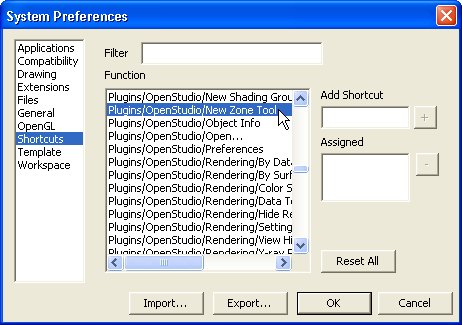
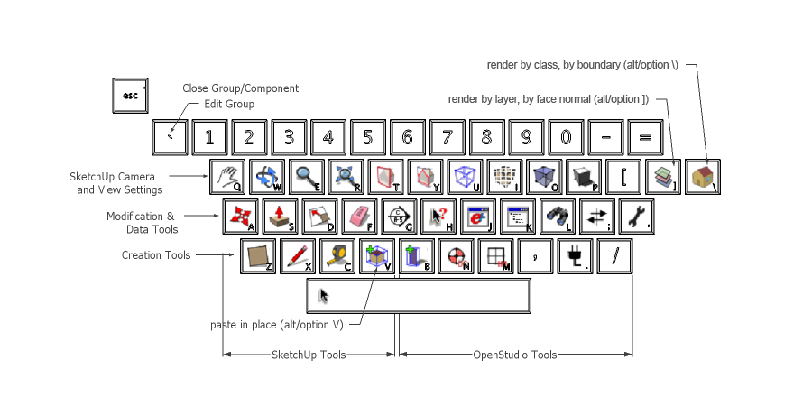

Custom Shortcuts
- SketchUp offers default shortcuts, but you can also setup your own shortcuts for almost any SketchUp function.
- Not only can shortcuts be set for SketchUp functions, but also for plugin functions, including all OpenStudio functions.
- You can find these under Window->Preferences->Shortcuts.

(Credit: David Goldwasser/NREL)
- You can export and import a set of keyboard shortcuts for Windows or Mac. OpenStudio includes a set with SketchUp and OpenStudio tools (see following graphic).
- On Windows you can import and export keyboard shortcuts from SketchUp under ->Preferences->Shortcuts
- On a Mac you must manually replace the file in the following directory, where "user_name" is your user name.
(User/user_name/Library/Application Support/Google SketchUp 7/SketchUp/Shortcuts.plist)
- If you have set up and want to save custom shortcuts, export these on Windows. On a Mac, manually copy the "Shortcuts.plist" file to a different location.
- The OpenStudio shortcut file is under "...Google SketchUp 7\Plugins\OpenStudio\lib\resources\shortcuts-windows\windows_shortcuts.dat".
(or "...\resources\shortcuts-mac\Shortcuts.plist" for a Mac).

(Credit: David Goldwasser/NREL)
- The shortcuts are organized by function.
- The top row contains shortcuts for changing the view instead of altering the content of the model.
- Camera Tools (pan, orbit, zoom, zoom extents)
- Section Tools (view/hide section plane, view/hide section cut)
- View Tools (view/hide rest of model, view/hide hidden geometry, x-ray mode, shadows, color by layer, render by face normal, render by class, render by boundary)
- The left side of the middle row has tools to modify geometry.
- Move, Push/Pull, Scale, Eraser, Make Section Cut
- The right side of the middle row has tools for viewing OpenStudio data.
- Info Tool, Info Dialog, Search Surfaces, Surface Matching, Default Constructions
- The bottom row is for tools to create geometry and objects.
- Rectangle, Line, Tape Measure (for guide lines)
- New Zone, New Shading Group, New Daylighting Controls, New Illuminance Map, Zone Loads
- The Escape key is set to SketchUp's default shortcut to exit from a group or component.
- The "~" key is set to enter into a group. You can press this after making a new Zone or Shading Group to enter into it.
- Another SketchUp default shortcut is the space bar, which changes your active tool to the selection tool.
- You can customize these shortcuts to your liking.
|